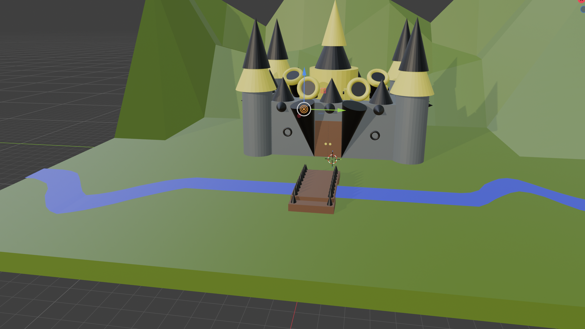

Donald Moore is a full-time student in Multimedia Production diploma. In his spare time, he loves to play video games, and he loves the challenge and joy it brings to him. He enjoys to draw as well, he is inspired by video games and pop culture when drawing. He loves taking scenic photos, taking them and getting the perfect shot is always satisfying for him. He was given Honors with distinction for the winter semester in 2025. His favourite class before attending the college was digital design. The accomplishment that he was most proud of was getting the highest mark in Show Choir 30. One thing he did as a part of show choir was sing the national anthem as a part of a Lethbridge Hurricanes game. His family is spread out throughout Canada and the US. He is not the first member to attend post-secondary. He loves collecting Pokémon cards. He wants to play golf but is nervous about getting into it. His favourite music comes from video games. One of the wildest storys that he has was his mom getting the exact same rare card in a Pokémon card pack not once, but twice.

